임상심리사-1급 (2013-09-28 기출문제)
1과목: 임상심리연구방법론
1. 공변량 분석의 기본 가정이 아닌 것은?
- 각 집단의 모집단 변량이 동일해야 한다.
- 매개변수와 종속변수 간에 선형적 상관관계가 있어야 한다.
- 상호작용 효과가 유효해야 한다.
- 각 집단의 회귀계수가 동일해야 한다.
(정답률: 알수없음)

2. 다음에서 일반적인 요인분석인 R 방법과 대비되는 Q방법(Q technique)의 특징으로 옳은 것은?
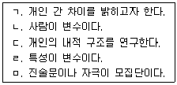
- ㄱ, ㄴ, ㄷ
- ㄴ, ㄷ, ㄹ
- ㄴ, ㄷ, ㅁ
- ㄱ, ㄹ, ㅁ
(정답률: 알수없음)
3. 실험설계를 위한 필수요건이 아닌 것은?
- 통제집단 및 비교집단을 함께 갖추어야 한다.
- 독립변수의 효과를 추정하기 위해 종속변수가 비교되어야 한다.
- 실험대상자들을 실험집단과 통제집단으로 무작위 배분 하여야 한다.
- 독립변수는 실험집단에만 투입하고 통제집단은 통제되어야 한다.
(정답률: 알수없음)
4. 내용분석법에 관한 설명으로 틀린 것은?
- 군집표집법이 표집방법으로 활용될 수 있다.
- 질적인 자료를 양적으로 전환하는 방법이다.
- 인간의 의사소통기록물을 대상으로 분석한다.
- 조사반응성으로 인하여 활용의 한계점을 가지고 있다.
(정답률: 알수없음)
5. 동일한 표본을 대상으로 복수의 시점에서 반복적으로 조사, 연구하는 방법은?
- 추세연구
- 패널연구
- 횡단연구
- 코호트 연구
(정답률: 알수없음)
6. 준실험설계의 특징으로 순수 실험설계와의 차이점은 무엇인가?
- 실험집단과 통제집단에 무작위 할당
- 외생변수의 통제
- 자연 상태에서의 처치
- 실험실 연구 가능
(정답률: 알수없음)
7. 통계적 회귀 현상에 관한 설명으로 옳은 것은?
- 수집된 자료가 어느 특정 선을 중심으로 분포하는 현상이다.
- 자료분석을 했을 경우 종속변수가 주요 독립변수의 변화에 따라 함께 변화하는 현상이다.
- 타당도 높은 연구에서는 수집된 자료가 광범위하게 분포되지 않고 응집력을 갖춘 회구성을 나타내야 한다는 것이다.
- 사전측정에서 극단적이 점수를 얻은 경우에 사후측정에서 독립변수의 효과에 관계없이 평균치로 값이 근접하려는 경향이다.
(정답률: 알수없음)
8. 다음 중 귀납적 추리에 해당하는 것은?
- 아동들에게 비디오 게임을 하게 한 후 이들의 공격성 수준을 예측한다.
- 유명한 공격성 이론이 사실이라는 것을 아동 대상 실험을 통해 증명한다.
- 공격성에 대해 이미 정립된 이론을 바탕으로 공격성에 대한 가설을 세운다.
- 한 실험 연구에서 공격성에 대한 정의를 제시한다.
(정답률: 알수없음)
9. 두 변수(x,y)의 상관계수는 0.92이다. u=1/2x+5, v=3/2y+1라 할 때, 두 변수(u,v)의 상관계수는?
- 0.69
- -0.69
- 0.92
- -0.92
(정답률: 알수없음)
10. 변산도를 나타내는 통계치를 바르게 짝지은 것은?
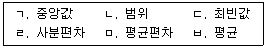
- ㄱ, ㄴ, ㄹ
- ㄱ, ㄷ, ㅂ
- ㄴ, ㄹ, ㅁ
- ㄷ, ㄹ, ㅁ
(정답률: 알수없음)
11. 통계적 가설 검정에 관한 설명으로 틀린 것은?
- 유의수준이란 제1종 오류를 범할 확률의 최대허용한계를 말한다.
- 제1종 오류가 증가하면 제2종 오류가 감소한다.
- t검정은 모집단의 평균과 분산을 아는 경우에 사용하며, 종속변인이 연속 변인이어야 한다.
- 변량분석은 집단간 변량과 집단내 변량의 비율인 F값을 통하여 집단간 차이나 처치의 효과를 검증한다.
(정답률: 알수없음)
12. 다음에서 조사연구의 표본 크기와 표집 오차에 대한 설명으로 옳은 것은?
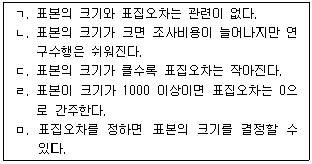
- ㄱ, ㄴ
- ㄴ, ㄷ
- ㄴ, ㄹ
- ㄷ, ㅁ
(정답률: 알수없음)
13. 연구가설이 갖추어야 할 기준과 가장 거리가 먼 것은?
- 검증 가능해야 한다.
- 단순성을 배제해야 한다.
- 흔히 미래형으로 진술된다.
- 두 개 이상의 변인 사이에 기대되는 관계로 진술된다.
(정답률: 알수없음)
14. 단순회귀모형 Yi=α+βXi+ei(i=1,2,…,n)에서 잔차
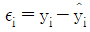
의 성질을 모두 고른 것은?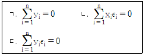
- ㄱ, ㄴ
- ㄱ, ㄷ
- ㄴ, ㄷ
- ㄱ, ㄴ, ㄷ
(정답률: 알수없음)
15. 측정과정에서 발생하는 체계적 오류의 주요 발생 원인에 해당하는 것은?
- 응답자의 기분
- 설문지 문항 수
- 복잡한 응답절차
- 사회적 바람직성
(정답률: 알수없음)
16. 기술통계에서 집중경향값으로서 산술평균의 특징이 아닌 것은?
- 평균을 중심으로 얻어진 편차점수의 합은 0 이다.
- 극단적인 점수가 포함되어 있을 때 매우 유용하다.
- 모든 점수의 합을 사례수로 나눈 값이다.
- 평균을 중심으로 얻어진 편차점수의 제곱의 합은 다른 어떤 기준값의 편차의 합보다 항상 작다.
(정답률: 알수없음)
17. 다중회귀분석에 관할 설명으로 틀린 것은?
- 표준화잔차의 절대치가 2이상인 값은 이상치이다.
- DW(Durbin-Watson)의 통계량이 0 에 가까우면 독립이다.
- 분산팽창계수(VIF)가 10이상이면 다중공선성을 의심해야 한다.
- 표준화잔차와 예측치를 산점도로 그려 등분산성을 검토해야 한다.
(정답률: 알수없음)
18. 확률표집에 관할 설명으로 옳은 것은?
- 표본의 추출 확률을 알 수 있다.
- 모집단 전체에 대한 구체적 자료가 없는 경우 사용된다.
- 표본이 모집단에 대해 갖는 대표성을 추정하기 어렵다.
- 모집단이 무한하게 클 경우에 적용할 수 있는 표집방법이다.
(정답률: 알수없음)
19. 척도에 관한 설명으로 틀린 것은?
- 명명척도는 숫자를 부여함으로써 대상을 구별할 수 있게 한다.
- 등간척도의 예로서, “A군의 IQ 90은 B양의 IQ 30에 비해 세배가 더 높다.”를 들 수 있다.
- 비율척도에서 절대 0점의 의미는 실제 양적으로 존재하지 않음을 의미한다.
- 서열척도는 단지 점수들의 등위에만 초점을 둔다.
(정답률: 알수없음)
20. 모분산이 알려져 있는 정규모집단의 모평균에 대한 구간추정을 하는 경우 표본의 수를 4배로 늘리면 신뢰구간의 길이는 어떻게 되는가?
- 신뢰구간의 길이는 표본의 수와 관계없다.
- 2배로 늘어난다.
- 1/2로 줄어든다.
- 모집단과 표본의 성격에 따라 달라진다.
(정답률: 알수없음)
2과목: 고급이상심리학
21. Clakr의 인지이론에 따르면, 공황발작을 초래하는 핵심적 요인은 무엇인가?
- 신체 건강에 대한 걱정과 염려
- 만성 질병에 대한 잘못된 귀인
- 억압된 분노표출에 대한 두려움
- 신체 감각에 대한 파국적 오해석
(정답률: 알수없음)
22. 다음 중 정신분열병의 양성증상에 해당되지 않는 것은?
- 와해된 사고
- 무논리증
- 망상
- 환각
(정답률: 알수없음)
23. 다음은 무엇에 관한 설명인가?
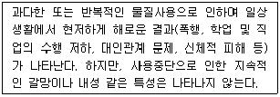
- 물질남용
- 물질금단
- 물질의존
- 물질중독
(정답률: 알수없음)
24. 심리장애와 각 장애에서 가장 특징적으로 나타나는 방어기제 틀리게 짝지어진 것은?
- 전환장애 – 억압
- 편집증 – 반동형성
- 경계성 성격장애 – 분리
- 강박장애 – 격리
(정답률: 알수없음)
25. 정신분열증 하위유형 중 편집형이 다른 하위유형과 구별되는 특징은?
- 초발 연령이 상대적으로 높다.
- 남녀 유병율이 거의 비슷한다.
- 평균보다 낮은 지적수준을 보인다.
- 전반적인 현실검증 능력의 손상을 보인다.
(정답률: 알수없음)
26. 다음 중 발달 장애에 관한 설명으로 옳은 것은?
- 소아기 붕괴성 장애는 생후 5개월까지 정상적인 발달이 이루어지다가 4세 이전에 머리 크기의 성장이 저하되고 기이한 손 움직임이 나타나며 사회적 교류에 현저한 어려움을 보인다.
- 아스퍼거 장애는 사회적 상호작용의 심각한 장애, 제한된 관심과 기이하고 반복적인 행동, 언어발달 지체가 심하나 IQ는 정상에 가깝다.
- 자폐장애는 3세 이전에 발병하며 자폐증 아동이 나타내는 문제행동은 아동의 발달수준과 생활연령에 따라 매우 다양하다.
- 레트장애와 소아기 붕괴성 장애는 자폐증보다 드물며 평생동안 지속되고 두 장애 모두 남아에게서 흔하다.
(정답률: 알수없음)
27. 19세기와 20세기에 정신장애에 대한 과학적 이해가 급격히 발전하면서 현대 이상심리학의 기초가 마련되었다. 이 당시 이상심리학의 발전에 기여한 중요한 변화가 아닌 것은?
- 정신장애에 대한 심리적 원인론이 제기되어 정신분석을 통해 본격화되기 시작하였다.
- 처음으로 정신병 환자를 수용하는 요양소가 만들어지기 시작했다.
- 진행성 마비의 원인이 규명된 것처럼 정신장애의 신체적 원인론을 뒷받침하는 여러 가지 발견이 이루어졌다.
- 과학적인 실험적 접근이 이루어져 이상행동의 심리적특성을 규명하려는 사례연구와 실험연구가 활발해졌다.
(정답률: 알수없음)
28. 다음 중 물질 관련 장애에 관한 설명으로 옳은 것은?
- 물질의존을 진단내리기 위해서는 내성과 금단 두 가지 증상이 필수적으로 존재해야 한다.
- 물질의존은 해당 장애가 12개월 이상, 물질 남용은 해당 장애가 6개월 이상 지속될 때 진단 내린다.
- 니코틴의 경우 의존 진단은 가능하지만, 중독이나 남용은 진단내리지 않는다.
- 동일군의 물질에 대해 물질남용과 물질 의존을 함께 진단내릴 수 있다.
(정답률: 알수없음)
29. 어떤 사람이 3년 동안 경미한 우울증 증상을 겪어오다가 최근 경조증 상태를 경험하였다면 이 사람에게 가장 적절한 진단은?
- 제1형 양극성 장애
- 제2형 양극성장애
- 기분부전장애
- 순환성 장애
(정답률: 알수없음)
30. 다음 사례에서 A씨에게 의심되는 질환으로 가장 적합한 것은?
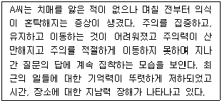
- 기억상실장애
- 혼수
- Ganser 증후군
- 섬망
(정답률: 알수없음)
31. DSM-IV에 근거하여 볼 때 다음 사례에서 B양의 진단으로 우선적으로 고려할 것은?
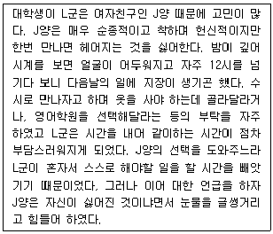
- 기분부전장애
- 경계선 성격장애
- 연극성 성격장애
- 의존성 성격장애
(정답률: 알수없음)
32. 회피성 인격장애에 관한 설명으로 옳은 것은?
- 역동적 관점에서 핵심감정의 문제는 수치심으로 가정된다.
- 일반적으로 대인관계에 대해 무관심하다.
- 양육과정에서 과잉보호보다는 부모의 학대 및 방임을 경험한 것으로 가정된다.
- 분열성 인격장애와 연속선상에 위치한다.
(정답률: 알수없음)
33. 심리장애의 발달에 관한 인지적 이론에 대한 설명으로 틀린 것은?
- 인지결손은 분별없고 충동적인 행동과 관련있다.
- 인지왜곡은 능동적이지만 역기능적인 사고과정을 말한다.
- 역기능적 인지도식이 발달하는 것은 주로 청소년기 이후다.
- 체계적 인지적 오류 중에서 개인화는 부정적 사건에 대해 내부귀인하는 것이다.
(정답률: 알수없음)
34. 공황장애에 관한 설명으로 옳은 것은?
- 광장공포증은 공황장애의 과거력이 있을 때에만 진단할 수 있다.
- 공황장애와 다른 불안장애는 함께 진단될 수 없다.
- 공황발작 중에 이인감 및 우울감을 경험하는 것으로 알려져 있다.
- 이완훈련이나 호흡훈련이 노출요법보다 효과적인 것으로 알려져 있다.
(정답률: 알수없음)
35. 정신분석이론의 성격구조에 관한 설명으로 틀린 것은?
- 초자아가 강할수록 건강한 성격이라 할 수 있다.
- 자아는 의식, 전의식, 무의식 영역에 모두 걸쳐져 있다.
- 자아는 이차과정사고를 따른다.
- 초자아는 도덕원리를 따른다.
(정답률: 알수없음)
36. 뚜렛장애와 주로 동반되는 장애를 모두 고른 것은?
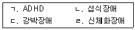
- ㄱ,ㄴ
- ㄱ,ㄷ
- ㄴ,ㄹ
- ㄷ,ㄹ
(정답률: 알수없음)
37. 갑상선 기능항진증, 저혈당증, 심부정맥, 뇌염에 의한 뇌질환, 각성제 및 카페인 과다 투여 등의 상태에서 가장 흔하게 나타날 수 있는 기질적 장신장애는?
- 기질성 인지장애
- 기질성 기분장애
- 기질성 불안장애
- 기질성 인격장애
(정답률: 알수없음)
38. 이상행동의 준거에 관한 설명으로 틀린 것은?
- 객관적 증상 이외에 본인의 주관적 불편감이 중요 기준이 될 수 있다.
- 사회적 기준은 문화와 시대가 변화하여도 동일하게 적용 가능하다.
- 심리검사를 통해 이상을 평가하는 것은 통계적 기준과 깊은 관련이 있다.
- 주관적 기준의 문제점 중 하나는 병식이 없는 사람에 대한 진단이다.
(정답률: 알수없음)
39. 지적장애에 관한 설명으로 틀린 것은?
- 18세 이전에 70미만의 지능지수를 나타내고 개인의 사회적인 책임을 수행하는 데 어려움이 뚜렷하다.
- IQ가 25~20 이하인 경우 심한 지적 장애(severe mental retardation)에 해당한다.
- IQ 70 미만에서 50~55까지인 경우 성인기에 대략 초등하교 6학년 정도의 지적 수준을 보인다.
- 지적장애는 대부분 아동기부터 나타나므로 아동, 청소년기 장애에 포함된다.
(정답률: 알수없음)
40. 다음 중 치매의 과정에서 나타나는 기억 감퇴로 간주될 수 있는 사례를 모두 고른 것은?
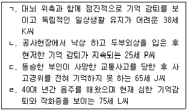
- ㄱ,ㄴ
- ㄴ,ㄷ,ㄹ
- ㄱ,ㄴ,ㄹ
- ㄱ,ㄷ,ㄹ
(정답률: 알수없음)
3과목: 고급심리검사
41. 한국아동인성평정척도(KPRC)의 자아탄력성 척도에 관한 설명으로 틀린 것은?
- 심리적 문제에 대한 아동의 대처 능력이나 적응 잠재력을 측정하기 위해 만들어졌다.
- 이 척도가 상승한 아동은 상황의 요구에 맞게 해동하고 환경 변화에 적절히 대처한다.
- 다른 모든 임상척도들과 정적인 상관관계를 보인다.
- 여러 가지 정신병리 발현 시 환경적 요인의 심각성을 반영하며 치료의 좋은 예후를 시사해 주는 지표이다.
(정답률: 알수없음)
42. 다음 중 심리검사 사용의 윤리에 위배되지 않는 경우는?
- 뇌손상 평가에 대한 훈련과 경험은 미비하였지만 신경과에 취직하여 검사를 실시하였다.
- 웩슬러 지능검사 결과에 따라 영재아동을 선발하고 같은 기준으로 다문화 가정의 아동에 대한 평가를 실시하였다.
- 신뢰도와 타당도를 위해 언론매체 등에 검사 문항과 원자료를 제시하여 결과를 설명하였다.
- 비밀보장의 원칙이 있으나 법원의 명령에 의해 심리검사 결과를 참고 자료로 제출하였다.
(정답률: 알수없음)
43. 다음 중 성인용(MMPI-2)과 청소년용(MMPI-A) 다면적 인성검사에서 차이가 나는 항목은?
- 임상척도의 구성내용
- K척도의 포함 유무
- 문항제작 과정 및 방식
- 타당도 척도의 구성
(정답률: 알수없음)
44. 정신상태 검사의 주요 항목과 내용의 예가 틀리게 짝지어진 것은?
- 감정과 정서 – 과활동성, 지체
- 사고의 내용 - 망상, 강박사고
- 지각의 혼란 – 환각, 착각
- 기억- 작활, 기억상실
(정답률: 알수없음)
45. 인지 행동적 면담에 관한 설명으로 틀린 것은?
- 문제 행동을 유인하는 환경적 자극 신호로부터 야기되는 환경적 반응의 결과를 중요시한다.
- 개인의 핵심적 신념의 규명이 우선적 과제이다.
- 목표증상이나 문제행동을 조작적으로 정의한다.
- 심리장애에 선행하거나 동반되는 사고 내용을 탐색한다.
(정답률: 알수없음)
46. MMPI와 Rorschach 검사에서 아래와 같은 결과를 보였을 때 가장 적합한 임상적 해석은?
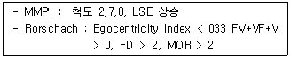
- 사회적 불편감과 회피
- 편집증적 관념
- 부정적 자기존중감과 자기비판
- 권위적 인물과 갈등
(정답률: 알수없음)
47. 다음 중 적성검사에 대한 설명으로 틀린 것은?
- 미국대학원 입학능력시험인 GRE도 적성검사에 속한다.
- 미술, 음악, 수학, 문학과 같은 특수재능을 측정하는 검사도 적성검사이다.
- 지능검사는 일반능력을 측정하는 검사이고 적성검사는 특수능력을 측정하는 검사로 간주한다.
- 지능검사는 유전적, 생득적 능력을 측정하는 검사인 반면 적성검사는 후천적인 획득능력을 측정하는 검사이다.
(정답률: 알수없음)
48. 다면적 인성검사의 2-7 상승척도쌍 유형이 나타내는 특징적 증상으로 가장 적합한 것은?
- 가족원에 대한 깊은 적대감
- 충동적 행동에 의한 불법적 문제와 자책감
- 높은 성취욕구가 충족되지 못한 데 따른 자기 처벌적 사고
- 두통, 불면증 등과 같은 신체적 증상에 대한 과도한 집착
(정답률: 알수없음)
49. 투사검사의 특징에 관한 설명으로 옳은 것은?
- 응답의 범위가 제한된다.
- 피검사자의 의도에 따라 반응을 조작하기 어렵다.
- 실시와 채점이 용이하다.
- 규준을 마련하기가 용이하다.
(정답률: 알수없음)
50. 다음 중 피검자의 지각적 통합능력을 측정하는 검사는?
- Hooper Visual Organization Test
- Line Bisection Test
- Face-Hand Test
- Rey Complex Figure Test
(정답률: 알수없음)
51. MMPI의 해석은 주로 상승한 두 임상척도의 쌍에 대한 해석이 기본을 이룬다. 다음의 설명은 어떤 상승척도 쌍에 대한 것인가?
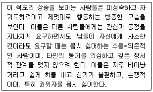
- 46/64
- 13/31
- 68/86
- 49/94
(정답률: 알수없음)
52. MMPI-2의 척도에 관한 설명으로 옳은 것은?
- S 척도: 고등학교 교사로 지원한 남성들의 반응과 규준집단 남성들의 반응을 대조하는 방식으로 선정되었다.
- VRIN 척도: 문항 내용과 상관없이 무분별하게 '그렇다'를 응답하는 경향을 탐지하기 위해 개발되었다.
- Fp척도: 선정된 F 척도의 문항들과 비교할 때 Fp척도의 만항들은 실제 정신병리를 반영할 가능성이 훨씬 낮다.
- TRIN 척도: 수검자가 문항에 비일관적으로 응답하는 경향이 있는지를 탐지한다.
(정답률: 알수없음)
53. 일반적으로 신경심리검사를 실시하는 목적과 가장 거리가 먼 것은?
- 현재의 기능상태에 대한 실제적 평가
- 환자관리 및 구체적 치료계획 수립
- 구체적인 재활계획 수립
- 뇌영상 장비로 판별이 어려운 손상부위의 국재화
(정답률: 알수없음)
54. 웩슬러 지능검사의 소검사들을 Cattell-Horn의 방식으로 '유동적ㆍ결정적 지능'으로 분류할 때, 다음 중 유동적 지능 범주에 속할 가능성이 높은 것은?
- 기본지식
- 어휘
- 공통성
- 이해
(정답률: 알수없음)
55. 학습장애가 의심되는 10세 아동에게 연속수행검사를 실시한 결과, 반응속도가 느리고 누락오류가 많았으며 오경보 오류는 정상범위에 해당하였다. 이때 고려할 수 있는 심리장애와 가장 거리가 먼 것은?
- 정신지체
- 주의력결핍 과잉행동장애-부주의 우세형
- 우울장애
- 품행장애
(정답률: 알수없음)
56. 심리검사를 개발할 때 시행하는 문항분석에 관한 설명으로 옳은 것은?
- 문항의 난이도가 낮을수록 변별도가 높다.
- 문항의 변별지수는 0.00 ~ 1.00의 값을 가진다.
- 문항-전체 상관이 낮을수록 변별력은 낮아진다.
- 변별지수가 0.20 이상이면 만족할만한 수준이다.
(정답률: 알수없음)
57. 웩슬러 지능 검사 결과의 해석으로 옳은 것은?
- 기본지식 소검사의 수행에 저조한 치매 노인: 최신 기억력, 단기 기억력 손상
- 이해 소검사의 수행이 우수한 품행장애 청소년: 양심과 도덕성, 사회적 판단력이 우수함
- 시지각 능력의 손상이 있는 우반구 손상 환자: 어휘나 기본지식, 토막짜기로 병전 지능을 추정할 경우 과소 추정의 가능성이 있음
- 공통성 소검사의 수행이 저조한 정신분열병 환자: 연상의 이완이나 사회적 판단력 저하는 개념적 추상적 사고 능력과는 관련이 없음
(정답률: 알수없음)
58. 한국판 성인용 웩슬러 지능검사(K-WAIS)의 실시, 채점과정에 관한 설명으로 틀린 것은?
- '빠진곳 찾기'에서 수검자가 말로 대답하지 않고 빠진 부분(정답)을 지적하여 맞춘 것으로 간주하였다.
- '산수 문제'에서 수검자가 손가락으로 책상 위에 써가면서 계산하지 못하도록 하였다.
- '토막 짜기'에서 수검자가 만든 모양이 30도 이상 회전된 것이어서 틀린 것으로 간주하였다.
- '모양 맞추기'에서 제한시간 내에 과제를 완수하지 못해서 INC라고 기록했다.
(정답률: 알수없음)
59. 신경심리검사를 실시하기에 적합한 시기에 관한 설명으로 틀린 것은?
- 손상 후의 상태를 정확히 평가하기 위해서는 손상이 일어난 후에 가급적 빨리 실시하는 것이 좋다.
- 보상문제와 관련한 임상적 결정을 위해서는 손상 후 최소한 18개월이 지난 뒤로 평가를 미루는 것이 좋다.
- 진행성 뇌질환인 경우는 초기평가가 중요하다.
- 뇌 손상 후 6주가 지나면 대체로 급성적 손상은 회복되므로 본격적인 평가는 2달 정도 지나서 실시하는 것이 좋다.
(정답률: 알수없음)
60. 다음 중 Gardner 가 제시한 지능이론에 관한 설명으로 틀린 것은?
- 지능을 '한 문화권이나 여러 문화권에서 가치가 있는 것으로 인정되는 문제를 해결하고 산물을 창조해내는 능력' 이라고 정의했다.
- 인간의 능력의 기저에는 일반지능과 같은 공통적인 능력이 존재한다고 보았다.
- 지적 능력은 서로독립적인 여러 유형의 능력으로 구성되어 있다고 보았다.
- 전통적인 지능검사의 지능이론이나 타당성에 의문을 제기하였다.
(정답률: 알수없음)
4과목: 고급임상심리학
61. 절충적 접근 중 하나인 Arnold Lazarus의 중다양식접근(BASIC ID)에서 심상(imagery)은 어떤 이론적 관점을 이용한 것인가?
- 정신분석
- 인지행동주의
- 인본주의
- 생물학적 접근
(정답률: 알수없음)
62. 듣기와 읽기는 양호하지만 특정 말소리를 선택하고 발성하는데 장애가 생기는 유형의 실어증은?
- 베르니케 실어증
- 전도성 실어증
- 브로카 실어증
- 명칭 실어증
(정답률: 알수없음)
63. 일반적인 자문의 단계를 순서대로 바르게 나열한 것은?
- 상황의 평가 → 질문의 이해 → 중재전략과 반응개발 → 종결 → 추적 조사
- 중재전략과 반응개발 → 상황의 평가 → 질문의 이해 → 추적 조사 → 종결
- 상황의 평가 → 중재전략과 반응개발 → 질문의 이해 → 추적 조사 → 종결
- 질문의 이해 → 상황의 평가 → 중재전략과 반응개발 → 종결 → 추적 조사
(정답률: 알수없음)
64. 대상관계이론 및 치료에 관한 설명으로 틀린 것은?
- 아동에 대한 최초의 정신분석적 치료를 적용한 후 대상 관계 이론의 길을 연 사람은 Fairbairn이다.
- 유아를 보는 관점은 쾌락-추구적 관점이 아니라 대상-추구(인간-추구)라는 관점이다.
- 대상관계 이론 학자들로는 Winnicott, Balint, Bowlby, Kernberg, Kohut등이 해당된다.
- 대상관계 관점에서, 정신병리는 자신과 타인을 항상 전적으로 '악'하거나 '선'한 것 중에 하나로 경직되게 보는 아동의 경향성이 반영된다.
(정답률: 알수없음)
65. 아동임상심리학자의 주요한 치료 방법 중 하나인 놀이치료를 Sigmund Freud 이후에 정신치료에 본격적으로 처음 도입한 사람은 누구인가?
- Anna Freud
- Hermine Hug-Hellmuth
- Melanie Klein
- Virginia Axline
(정답률: 알수없음)
66. A씨는 최근 다음과 같은 행동특징을 보이고 있다. A씨가 주로 사용한 방어기제로 가장 적합하게 짝지은 것은?
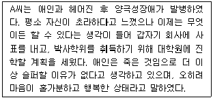
- 부인, 반동형성
- 치환, 투사
- 억압, 행동화
- 투사, 부인, 주지화
(정답률: 알수없음)
67. 심리검사의 활용에 관한 설명으로 옳은 것은?
- 지능검사는 지능을 측정한다는 목적에 국한하여 사용하며, 내담자의 성격 특성을 반영하는 정보의 활용은 무시하는 것이 권장된다.
- 심리검사 결과를 해석하는 것은 해석요강에 따른 해석에 국한해야 하며 주관적 해석은 환자에 대한 잘못된 판단을 내리게 한다.
- 심리검사 결과 나타난 양적수치는 환자에 대한 가장 의미 있는 정보로 간주되어야 한다.
- 심리검사는 면접, 행동관찰 등의 정보와 함께 고려하여 종합적인 평가를 해야 한다.
(정답률: 알수없음)
68. 체계적 둔감화의 기본원리 및 시행절차에 관한 설명으로 틀린 것은?
- 불안억제에 효과적이면서 불안반응과 양립불가한 행동 반응을 역조건형성 절차에 채택해야 한다.
- 가장 낮은 불안위계의 표적행동은 별도의 이완절차가 필요치 않을 정도이다.
- 표적행동이 추상적이어서 실제 물리적인 방식으로 상황직면이 불가한 경우에는 적용할 수 없다.
- 기본적인 실제 수행기술의 부족 때문에 불안을 느끼는 경우에는 적용이 추천되지 않는다.
(정답률: 알수없음)
69. 다음 중 1940년대 이루어진 임상심리학의 역사적 사건이 아닌 것은?
- MMPI 검사의 개발
- Wechsler 검사의 개발
- 과학자-전문가 모형
- Wolpe의 체계적 둔감화
(정답률: 알수없음)
70. 심리평가에 대한 치료적 모델의 특성이 아닌 것은?
- 개별화된 목표를 위해 협력적 작업을 강조한다.
- 환자와 평가자와의 사이에 일어나는 과정 중심적이다
- 전문지식과 대인관계 기술을 갖춘 전문가에 의해 시행된다.
- 논리적 실증주의 이론에 기초한다.
(정답률: 알수없음)
71. 다음 중 강박장애환자를 치료하는데 가장 적합한 것으로 경험적으로 타당화된 치료기법은?
- 행동조형기법과 홍수요법
- 노출과 반응방지치료
- 자기주장훈련과 체계적 둔감법
- 사회기술훈련과 재활치료
(정답률: 알수없음)
72. 임상심리사 양성을 위한 교육과 수련에 관한 설명으로 가장 거리가 먼 것은?
- 여타 정신건강전문가에 비해 임상심리사의 교육과 수련은 전문가 영역과 과학적 영역이 고루 강조되어 왔다고 할 수 있다.
- 수련과정의 기본적 기능은 습득한 임상적 지식을 임상실제에 통합하는 것으로 실험적-객관적 태도를 발전 시키고 다른 분야의 전문가와 협업하는 태도를 촉진 시키는 것이다.
- 임상심리사와 관련된 학위 과정에서는 연구자적 자질을 강조하며 심층적이고 전문적, 학구적인 지식의 습득을 배양하도록 한다.
- 임상심리사는 정신의학 장면에서의 역할이 가장 중요하기 때문에 학문적 교육보다 병원장면의 수련과정이 중요하며, 이를 반드시 이수하여야만 한다.
(정답률: 알수없음)
73. 심리학자의 일반적인 윤리기준에 해당하지 않은 것은?
- 심리학자는 치료에 관한 전문적인 서비스를 제공하기 전에 내담자의 동의를 얻어야 한다.
- 심리학자는 자신의 자격과 능력을 과장해서는 안된다.
- 심리검사는 실시와 해석에 자격이 있는 사람들만이 수행해야 하며, 자격이 없는 사람이 검사를 사용하도록 장려해서는 안된다.
- 심리학자는 어떤 경우이든 내담자로부터 획득한 개인적 정보와 기밀을 누설해서는 안된다.
(정답률: 알수없음)
74. 심리치료에 관한 일반적 설명으로 틀린 것은?
- Rogers는 일치성(진솔성), 무조건적 긍정적 존중, 정확한 공감을 심리치료 관계의 핵심 태도로 꼽았다.
- 심리치료의 구조를 환자에게 알려주는 것은 환자의 불필요한 저항과 전이를 유발시키는 등 부정적인 영향이 클 수 있으므로, 가능하면 상세히 알려주지 않는 것이 좋다.
- Egan 은 심리치료자의 미시적 기술로 SOLER(Squarely, Open, Leaning, Eye contact, Relaxed)를 제시하였다.
- 심리치료를 시작하기 전에 가능하면 심리평가를 실시하여 환자에 대한 이해를 촉진하는 것이 권장된다.
(정답률: 알수없음)
75. '자신의 행위가 나쁜지를 모르는 상태에서 불법적 행동을 했다는 것을 입증하면 정신이상에 의한 무죄 평결을 받도록 한 기준'과 관계가 없는 것은?
- M'Naughten rule
- Durham standard
- ALI(American Law Institute) standard
- GBMI verdict
(정답률: 알수없음)
76. 면접법에 관한 설명으로 옳은 것은?
- 구조화된 면접은 환자에 대한 심층적인 개인적 정보를 알아내는 데에 유용하다
- 정신과 장면에서 구조화된 면접으로 대표적인 것은 정신상태검사(mental status examination)이다.
- 비구조화된 면접법으로 얻은 자료는 임상가마다 다르기 때문에 비실용적이다.
- 면접의 내용은 신뢰도가 낮기 때문에 심리검사의 결과를 보충하는 정도로 활용해야만 한다.
(정답률: 알수없음)
77. 다음 중에서 행동의학의 시술영역과 가장 거리가 먼 것은?
- 금연
- 비만
- 만성 통증 관리
- 우울증
(정답률: 알수없음)
78. 임상심리학의 관점에서 보는 이상선(abnormality)의 사례와 가장 거리가 먼 것은?
- A씨는 매일 아침 일어났을 때 하루를 도대체 어떻게 살아가야 할지에 대하여 걱정하며, 심하게 우울감을 경험하고 있어 이번 달에만 해도 2번이나 회사를 결근하였다.
- B씨는 교통사고로 인하여 뇌를 크게 다친 상태로, 최근 실시한 Wechsler식 지능검사에서 65점 정도의 지능지수를 보였다.
- 컴퓨터 프로그래머인 C씨는 친구들이 별로 없으며 대인관계에 관심이 적은 편으로서 거의 일주일에 1회 정도 외출하여 생필품을 사는 것 이외에는 내내 자신의 작업실에서 일에 몰두하는 편이다.
- 모 회사의 부장인 D씨는 회사에서 주목받는 인재이나, 대인관계상 갈등이 많은 편으로서 최근 “D씨 때문에 힘들어서 회사를 더 이상 못 다니겠다.” 고 구체적인 문제사례를 말하며 회사를 사직한 부하직원이 3명이나 되며 D씨 부하직원들의 스트레스 평가 결과 사내 최고 수준일 뿐 아니라 상사에 대한 강한 불만을 표현하고 있다.
(정답률: 알수없음)
79. 사례개념화에 관한 설명으로 옳은 것은?
- 한 개인에 대해 개념화한다는 것은 불가능한 것이므로 심리치료에서 강조되지 않는다.
- 사례개념화는 환자에 대한 정보를 바탕으로 청사진을 그리는 절차라고 할 수 있다.
- 사례개념화에서 이론적 틀은 중요하며 가장 적합한 이론적 틀을 항상 염두에 두어야 한다.
- 사례개념화로 정립된 치료목표는 치료의 핵심이므로 사례개념화의 내용은 불변성의 원칙을 갖는다.
(정답률: 알수없음)
80. 지역사회 심리학 운동에서의 개입 수준과 실제적인 개입활동에 관한 설명으로 틀린 것은?
- 미시체계 수준: 개인이 사회적 관계형성으로부터 얻을 수 있는 이득을 설명하고 그 구체적인 기술을 개발하는 방법을 교육한다.
- 조직 수준: 학교나 단위 조직의 전반적인 성향을 분석하여 그들의 장단점을 분석하고 향후 개발 방향 등을 제시하여 준다.
- 지역 수준: 수해나 지역 내 주요 사건을 중심으로 한 심리적인 영향을 분석하고 이에 대한 대비책 및 해결책을 제안하여 준다.
- 거시체계 수준: 국회의원들의 성향을 분석하여 그들의 문제점을 분석하고 대안을 제시한다.
(정답률: 알수없음)
5과목: 고급심리치료
81. 다음 중 정신분석 치료에 관한 설명으로 틀린 것은?
- 주로 훈습할 무의식적 자료를 의식 세계로 가져오는 방법을 사용한다.
- 초점은 초기 아동기의 경험에 둔다.
- 저항은 치료 과정 중 필수적인 것이며, 무의식적 자료를 의식의 표면으로 가져오게 한다.
- 성격 변화를 위해서는 내담자와 치료자의 전이 관계에 대한 탐색이 필수적이라 가정한다.
(정답률: 알수없음)
82. 비언어적 단서 관찰에 해당하지 않는 것은?
- 말하는 스타일
- 몸짓과 동작
- 표정
- 눈물
(정답률: 알수없음)
83. 내담자에게 적합한 심리치료방법을 선택하는데 가장 좋은 기준은?
- 내담자가 가장 선호하는 방식
- 치료자가 가장 전문으로 하는 치료 방식
- 각 정신장애에 해당하는 근거기반치료 방식
- 내담자와 치료자의 협의에 의한 선택
(정답률: 알수없음)
84. 위기 개입의 단계를 바르게 나열한 것은?
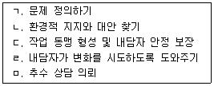
- ㄱ → ㄷ → ㄹ → ㄴ → ㅁ
- ㄱ → ㄴ → ㄷ → ㄹ → ㅁ
- ㄷ → ㄱ → ㄹ → ㄴ → ㅁ
- ㄷ → ㄱ → ㄴ → ㄹ → ㅁ
(정답률: 알수없음)
85. 다음은 어떤 치료를 기술하는 것인가?
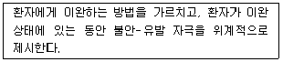
- 점진적 이완법
- 반응방지법
- 체계적 둔감법
- 불안인지행동치료
(정답률: 알수없음)
86. 심리재활에 관한 설명으로 틀린 것은?
- 심리재활은 장애인이 가정생활이나 사회생활에 적응하도록 도와주는 것이다.
- 심리재활의 접근 방식은 개인과 환경에 대한 중재를 포함한다.
- 심리재활은 개인에 대한 변화를 촉진하여 환경에 적응하게 하는데 가장 큰 목적이 있다.
- 재활과정에서 장애인의 심리적 요인에 대한 접근은 재활의 욕구를 향상시켜 새로운 가능성을 찾도록 도와준다.
(정답률: 알수없음)
87. 실존심리치료의 입장에서 본 심리장애에 대한 설명으로 틀린 것은?
- 사회공포증 환자가 경험하는 불안은 실존심리치료의 관점에서 보면 일종의 실존적 불안이다.
- 건강염려증 환자가 경험하는 불안은 실존심리치료의 관점에서 보면 일종의 신경증적 불안이다.
- 정신적으로 건강하다는 것은 신경증적 불안 없이, 그러나 삶의 불가피한 실존적 불안은 참아내는 능력을 가지고 살아가는 것이다.
- 불안은 생존하고, 자기 존재를 유지 및 주장하려는 개인적 욕구에서 나온다.
(정답률: 알수없음)
88. 다음의 예는 어떤 인지적 오류(왜곡)에 해당하는 것인가?
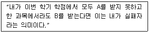
- 선택적 추상화
- 임의적 추론
- 이분법적 사고
- 과잉일반화
(정답률: 알수없음)
89. 상담계획 수립에 관한 설명으로 옳은 것은?
- 상담자의 가치관과 세계관이 반영되어야 한다.
- 상담과정은 사회체계의 기대와 영향을 다루어야 한다.
- 상담자가 제안한 상담시간을 내담자의 시간여건 보다 우선시 한다.
- 외부지지체계 요소는 배제해야 하며 내담자 고유 자원에 집중해야 한다.
(정답률: 알수없음)
90. 직업 재활을 위한 개입 전략 단계를 바르게 나열한 것은?
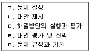
- ㅁ → ㄱ → ㄴ → ㄷ → ㄹ
- ㅁ → ㄱ → ㄴ → ㄹ → ㄷ
- ㄱ → ㅁ → ㄴ → ㄷ → ㄹ
- ㄱ → ㅁ → ㄴ → ㄹ → ㄷ
(정답률: 알수없음)
91. 노인부부의 성 갈등 조정을 위한 초기 면접단계에서 고려할 사항과 가장 거리가 먼 것은?
- 내담자가 가지고 있는 성에 대한 이해를 파악한다.
- 내담자가 가지고 있는 배우자에 대한 이해를 확인한다.
- 성 갈등의 주요 호소내용을 파악한다.
- 성 갈등 치유를 위한 전략을 수립한다.
(정답률: 알수없음)
92. 청소년 비행의 치료에 관한 설명으로 틀린 것은?
- 비행 청소년을 시설에 수용시키는 것은 다양한 프로그램을 활용하고 직업 교육을 시킬 수 있다는 점에서 권장할 만한 접근이다.
- 모델링, 연습, 교수, 피드백을 통한 행동적 접근법이 비행 청소년 치료에 활용될 수 있다.
- 비행 청소년과 그들의 가정에 대한 개입 프로그램은 매우 효과적임이 입증되었다.
- 비행 청소년의 거주 환경을 변화시키고자 하는 접근법이 무시된다면 효과적인 접근이 이루어질 수 없다.
(정답률: 알수없음)
93. 약물중독에 대한 인지행동치료 프로그램 내용으로 권장되지 않는 것은?
- 위기 상황 및 실수에 대한 대처훈련을 한다.
- 외견상 사소해 보이는 일 중에서 재발을 유발할 만한 일을 미리 찾아본다.
- 자신의 자제력을 증가시키기 위해 약물을 접하고도 참는 자제력 시험을 자주 해 본다.
- 역할극 시연을 통해 거절 연습을 한다.
(정답률: 알수없음)
94. 인간중심치료의 기본 가정에 관한 설명으로 틀린 것은?
- 치료기법보다는 내담자의 태도 및 감정이 강조된다.
- 치료자의 주요 기능은 내담자가 자신을 탐구하기에 자유로운 분위기를 제공하는 것이다.
- 치료자의 주요 역할은 적절한 충고와 제안, 해석의 제공이다.
- 내담자가 자신 내부에 성장 잠재력을 가지고 있다 전제한다.
(정답률: 알수없음)
95. 심리치료 과정을 통한 변화에 관한 설명으로 틀린 것은?
- 변화에 대한 기대나 위약효과는 치료적 변화를 거의 설명하지 못한다.
- 저항은 변화가 위협적이기 때문에 발생한다.
- 이차적 이득은 변화를 방해한다.
- 중요한 타인은 내담자의 삶이 그대로 유지되기를 원하기 때문에 변화를 방해할 수 있다.
(정답률: 알수없음)
96. 다양한 중독현상에 걸쳐 나타나는 공통점이 아닌 것은?
- 과도한 증상으로 인한 삶의 질의 변화
- 중독 기회의 가용성(availability)
- 중독으로 인한 높은 비용
- 중독에 대한 높은 기대
(정답률: 알수없음)
97. 다음 중 성 문제 치료의 지침으로 적합하지 않은 것은?
- 치료자는 가능하면 성에 관한 자신의 철학을 치료자로서의 역할과 일치시켜야 한다,
- 치료자는 성에 관한 상담과정에서 자신의 한계를 인식하고 그 한계를 넘어 상담하지 않도록 해야 한다.
- 치료자는 내담자의 위장적 태도에 대처할 수 있어야 한다.
- 치료자는 내담자가 성에 관해 무지하다고 가정하는 것이 안전하다.
(정답률: 알수없음)
98. 현실치료 이론에 관한 설명으로 옳은 것은?
- 내담자의 현실문제에 초점을 두기 때문에 정신병에 대해서는 적용 가능하지 않다.
- 내담자의 문제는 환경적인 여건에 의존하므로 환경의 개선에 많은 노력을 기울인다.
- 상담자의 지시적이고 적극적인 개입이 필요하기 때문에 유머는 중요하게 고려되지 않는다.
- 문제를 겪고 있는 사람들은 자신의 기본적 욕구를 충족 시킬 수 없기 때문에 고통 받는다고 가정한다.
(정답률: 알수없음)
99. 품행장애 치료에 적용되는 부모훈련에 관한 설명으로 틀린 것은?
- 서로 감정을 덜 다치게 하며 일반적으로 하루 2~3회 정도 발생하는 문제행동부터 시작한다.
- 지시에 거부적인 부모들에게는 훈련과정에서 치료자와 부모의 역할을 바꿔보는 것인 효과적일 수 있다.
- 숙제를 해오지 못했다고 하는 부모에게는 전화를 해서 도와주어야 한다.
- 부모훈련의 요소들은 간단한 원리에 근거하기 때문에 대부분 쉽게 효과적인 수행이 가능한다.
(정답률: 알수없음)
100. 정신분석적 심리치료의 주요 기법 중 자유연상에 관한 설명으로 틀린 것은?
- 자유연상기법은 최면 사용에 대한 불만을 품고 개발된 것이다.
- 환자의 방어가 약화됨에 따라 환자의 연상은 점점 기괴해지고 진정한 의미를 찾기 어려워진다.
- 자유연상에 환자는 마음속에 떠오르는 것은 어떤 것이든 다 말하도록 격려된다.
- 자유연상에서의 연상들을 따라가면 환자의 삶속의 중요하거나 억압된 어떤 부분에 이르게 된다.
(정답률: 알수없음)